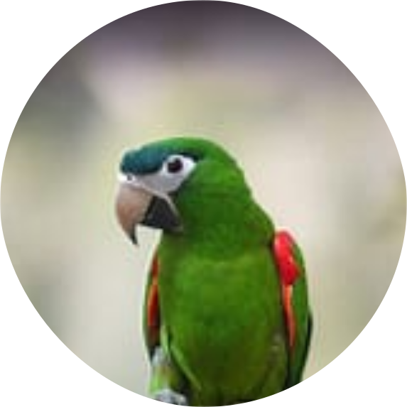

Birds
Birds make for good pets. They require less immediate care
than cats or dogs. They are inexpensive to feed, social and affectionate. And, they don't require large
habitats. They are also relatively easier to train.Given proper training and socialization, birds can be every bit as loving and affectionate as a cat or dog. Some pet birds are inseparable from their owners.
Budgerigar
A small green and yellow parrot, with black barring
above, and a small patch of blue on the cheek.
Budgerigars have tetrachromatic color vision,
although all four classes of cone cells will not
operate simultaneously unless under sunlight or a UV
lamp. They are the third most popular pet in the world,
after the domesticated dog and cat.

Cockatiel
A small parrot that has grey plumage with
prominent white flashes on the outer edges
of each wing. They have also learned to
imitate certain human or environmental sounds
without being taught how to do so. The
cockatiel's distinctive erectile crest expresses
the animal's emotional state. They feature a round
orange area on both ears, often referred to as
"cheddar cheeks".
Cockatoo
If you prefer a large pet bird that is friendly
and affectionate, a cockatoo can be a great choice.
These beautiful birds bond very strongly with their
caretakers and prefer to be with them as often as
possible. It is imperative that you have plenty of
time to spend socializing with your bird. Cockatoos
can become depressed if they aren't given enough
attention and might resort to feather plucking or
other destructive behaviors.
Hyacinth Macaw
Known as "gentle giants," hyacinth macaws
are the largest of all parrots. And as
sociable and friendly birds, they love nothing
more than to spend time playing and cuddling
with their owners. Due to their size, it can be
difficult for most people to provide proper
housing for these birds. But those who are able
to meet their needs are rewarded with an incredible
relationship with their feathered friend.

Agapornis
Lovebirds are social and affectionate small
parrot. Their name comes from parrot’s strong
monogamous pair bonding long period of
spending sitting and grooming each other.
Lovebirds are the smallest species of parrot
with a length of just 13 to 17cm and weight
only 40 to 60 grams, stocky built, short tail
and large sharp beak.

Dove
You might not immediately think of a dove as a friendly pet bird, but domesticated, hand-fed doves are known
to
be extremely sweet and gentle. These birds rarely bite, and even people with limited bird experience
generally
find it easy to train and bond with doves. They enjoy their caretakers' companionship but usually won’t be
overly demanding of attention.

Parrotlet
Spunky and relatively easy to care for, parrotlets are known for having personalities much larger than their
tiny bodies. Those considering parrotlets must have plenty of time to play and socialize with their pets, as
these birds can become a little wild without regular handling. But people who interact with their parrotlets
every day are usually able to form strong bonds with these comical little birds.

Green Cheecked Conure
Hailing from South America, green-cheeked conures thrive on spending time socializing
with their caretakers. By nature, they are intelligent, playful, and slightly mischievous birds. But
compared to
other conure species, they tend to be quieter and more easygoing. They usually don’t learn to talk, but
their
charming personalities are more than enough to make them entertaining and engaging companions.
Hawn's Macaw
Also native to South America, Hahn’s macaws are the smallest macaws. But they pack a lot
of personality into their compact bodies. They are intelligent and playful birds that tend to be gentle when
properly socialized and handled. These macaws prefer to spend as much time interacting with their caretakers
as
possible and might become depressed if they feel ignored. They also can be rather noisy, though some do
learn to
talk quite well.
